TRABALHOS
Associação de Jovens do Sardoal (AJS)
Cartazes (físicos e digitais), panfletos, vídeos de divulgação e de resumo, fotógrafo e videógrafo para a Associação de Jovens do Sardoal (AJS).


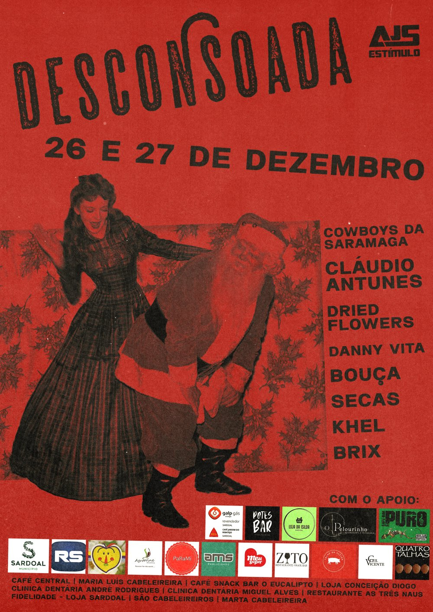


G. D. R. Os Lagartos
Gestão de conteúdos visuais e fílmicos para promoção da equipa de futebol de seniores do Grupo Desportivo e Recreativo – Os Lagartos.


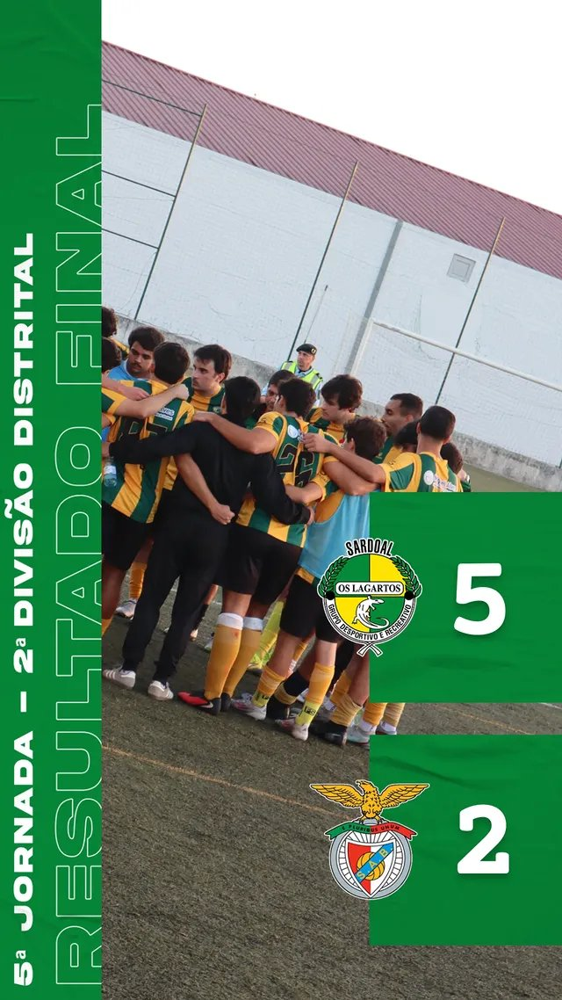
Khel
Álbum fotográfico acompanhado por vídeo de recap.
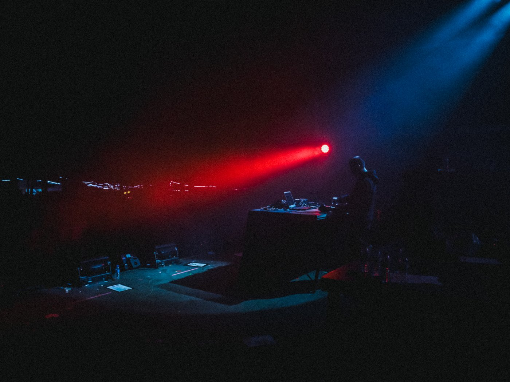
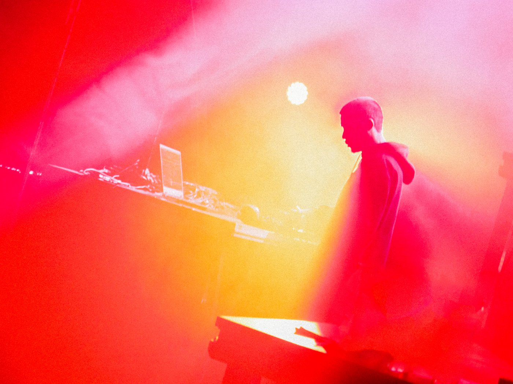

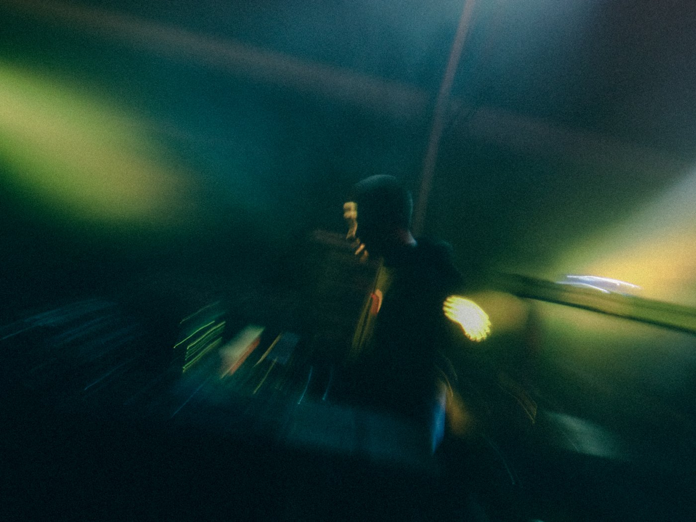

Rhavilla e Sopro
Álbum fotográfico acompanhado por vídeo do djset completo.
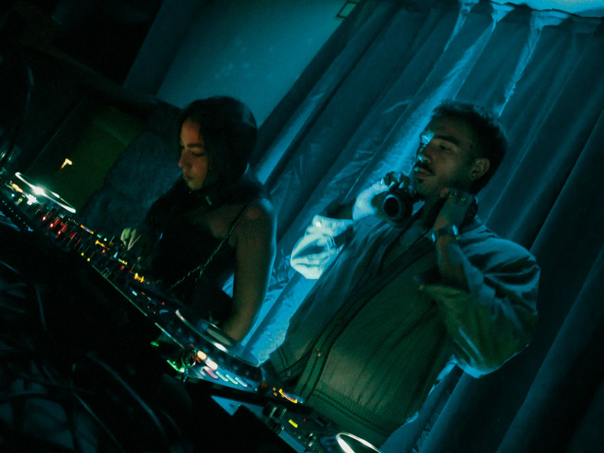
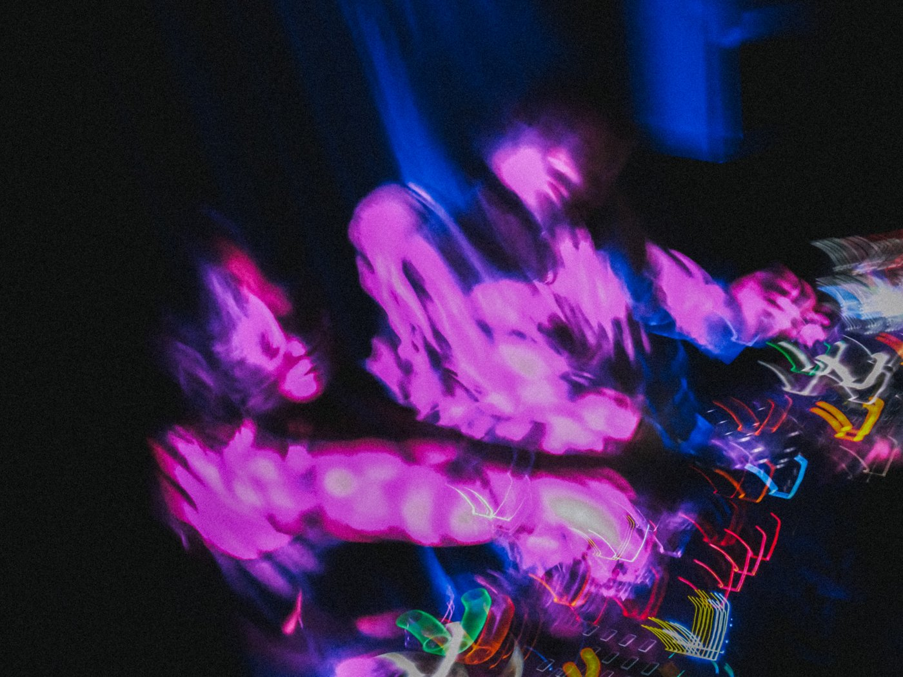


Elena
Álbum fotográfico acompanhado por vídeo de recap para redes sociais.
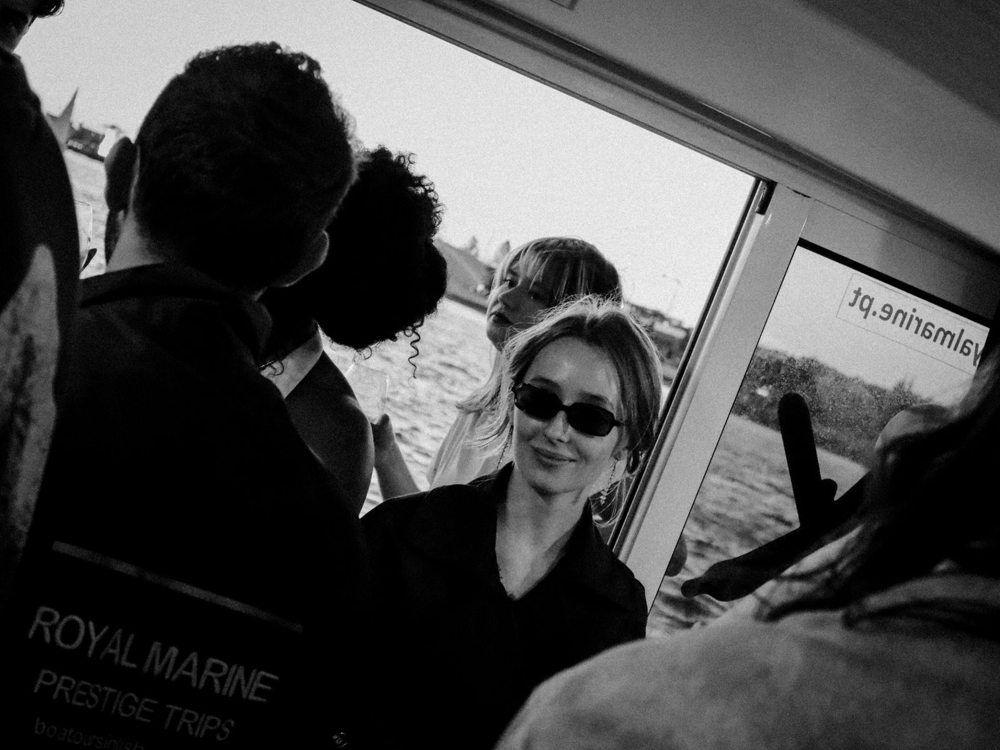
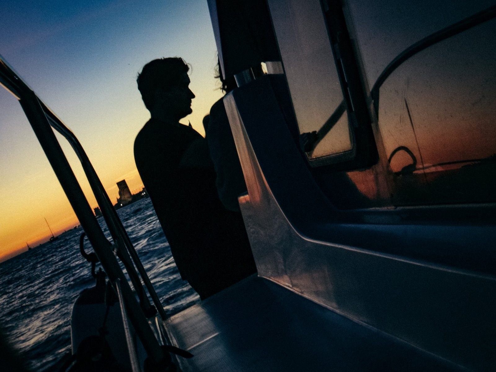


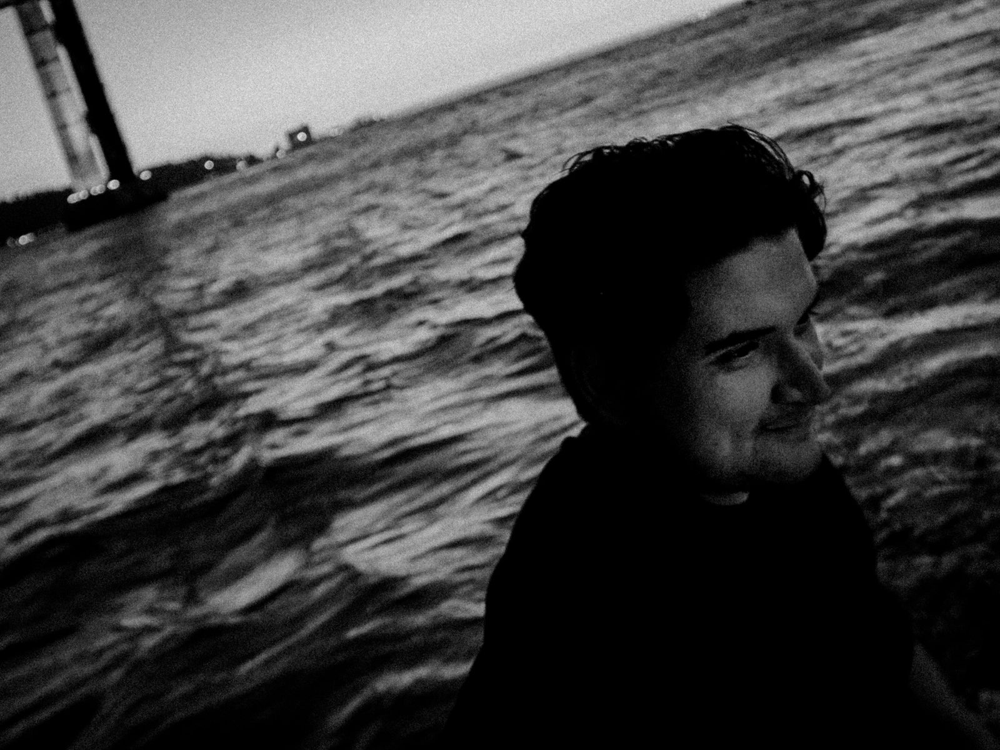
CineAtlas
Um mapa-mundo interativo para cinéfilos, onde se escolhe um país e o mapa sugere um filme aleatório desse mesmo país. É uma maneira divertida de viajar pelo mundo e descobrir novas cinematografias.

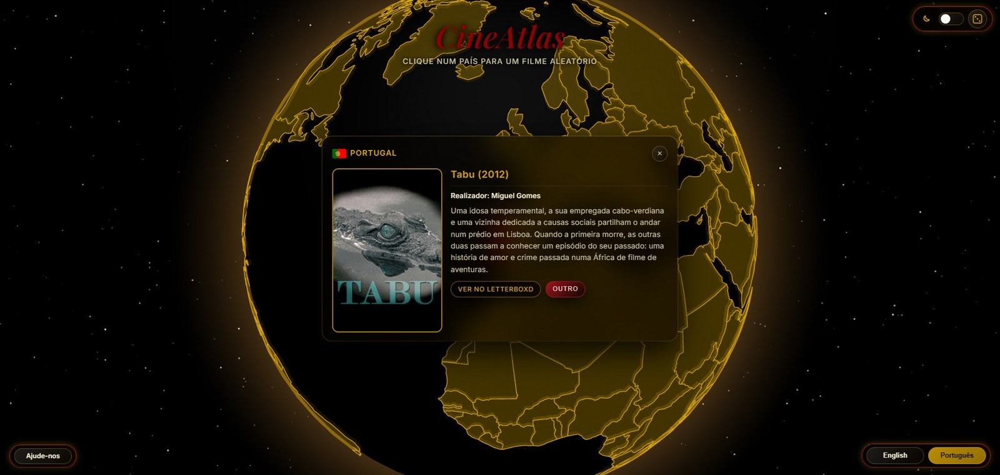